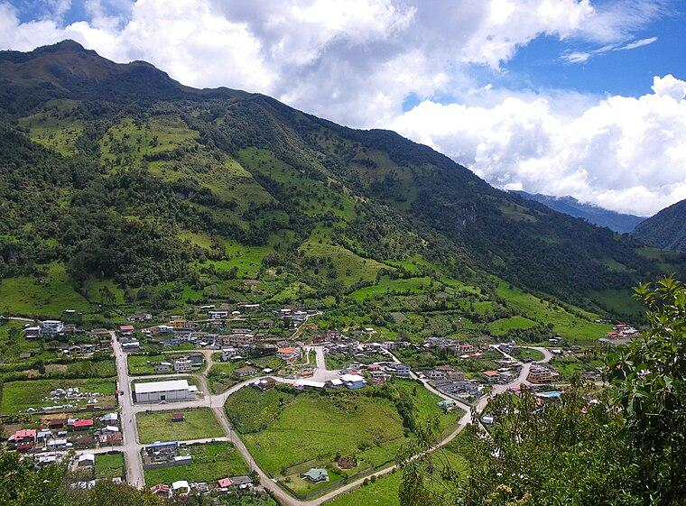

en el fondo de descubre detra de letras co un fondoSumérgete en un paraíso andino rodeado de imponentes montañas, aire puro y relajantes aguas termales volcánicas en la provincia de Napo.
Ver DestinosPiscinas de aguas termales medicinales con vistas espectaculares al páramo andino.
Senderos mágicos entre la neblina, ideales para el avistamiento de flora y fauna única.
Disfruta de la tradicional trucha fresca de río preparada al estilo de la zona.